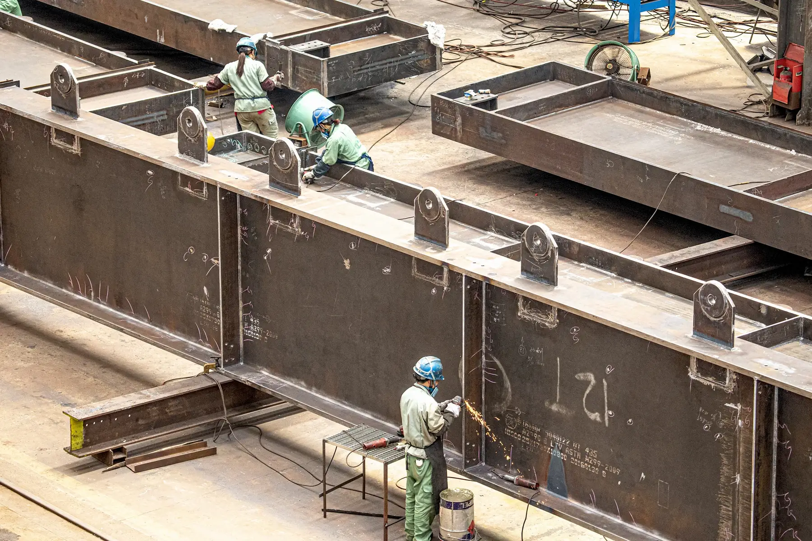
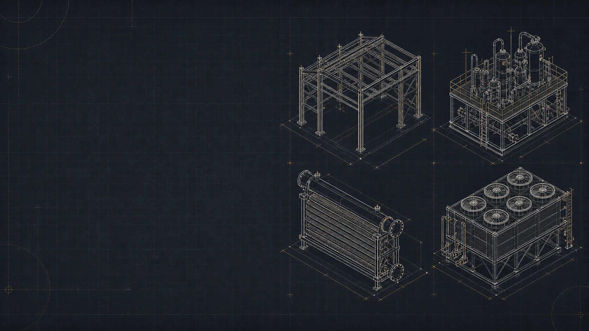
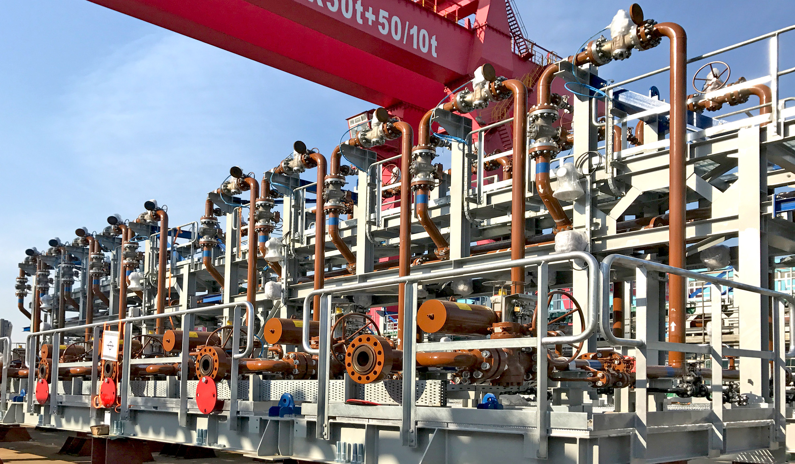
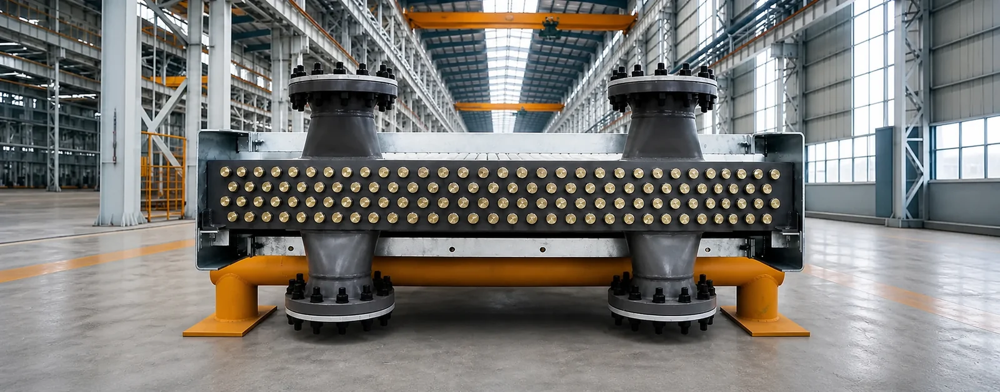
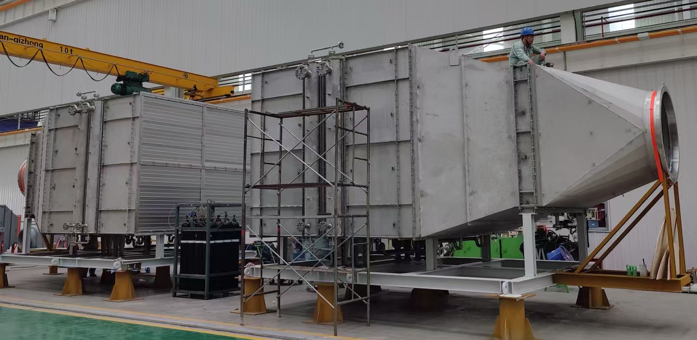
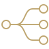

01Structural Steel
Two specialized fabrication bases supporting project-specific structural steel requirements.

Modern Group · Jiangsu, China
Structural steel, modular plants and energy equipment delivered through three focused manufacturing companies near Shanghai and major Yangtze River ports.
Structural Steel
Modular Plants
HRSG Pressure Parts
Air-Cooled Heat Exchangers
One group identity. Three operating companies.
Modern Group is the shared commercial identity of MDHI, MMEC and MEEM. The three manufacturing entities share an executive leadership team and unified governance standards while each company retains its own legal and operational responsibility.
Purpose-built facilities in Taicang and Zhangjiagang align specialist production with port-oriented logistics.
 01
01MDHI · TAICANG
Structural Steel
Explore MDHI → 02
02MMEC · ZHANGJIAGANG
Structural Steel · Modular Plants
Explore MMEC → 03
03MEEM · ZHANGJIAGANG
HRSG Pressure Parts · ACHE
Explore MEEM →A clear route to the right manufacturer
Every enquiry is directed to the operating company with the relevant manufacturing scope.

01Two specialized fabrication bases supporting project-specific structural steel requirements.

02A focused manufacturing platform for integrated modules and modular plant delivery.

03Dedicated manufacture of pressure-part assemblies for heat recovery steam generator applications.

04Specialized fabrication of air-cooled heat exchanger equipment for energy and process projects.
Shanghai · Taicang · Zhangjiagang
MDHI operates in Taicang Port Development Zone. MMEC and MEEM are located in Zhangjiagang near Gangxin Port, with engineering and commercial coordination supported from Shanghai.


 Factories
Factories Shanghai office
Shanghai office Ports
Ports Airports
Airports Rail
RailApproximate straight-line scale, calibrated from airport landmarks. Not for navigation or road-distance measurement. Reference distances remain in the location panel.
玛顿模块化工程制造（苏州）有限公司
2669 Yanjiang Rd., Daxin Town, ZhangjiagangStructural steel and modular plants. Reference distances — Pudong Airport (PVG): 230 km; Gangxin Heavy Equipment Terminal: 1 km; Zhangjiagang Railway Station: 30 km.
玛顿能源装备制造（苏州）有限公司
1 Duanshan Rd., Deji Subdistrict, ZhangjiagangHRSG pressure parts and air-cooled heat exchangers. Reference distances — Pudong Airport (PVG): 230 km; Gangxin Heavy Equipment Terminal: 2 km; Zhangjiagang Railway Station: 30 km.
玛顿重工（太仓）有限公司
169 Longjiang Rd., Taicang Port Development Zone, TaicangStructural steel fabrication. Reference distances — Pudong Airport (PVG): 95 km; Taicang Port: 10 km; Shanghai Hongqiao Railway Station: 80 km.
Engineering and commercial coordination. Reference distances — Pudong Airport (PVG): 40 km; Shanghai Hongqiao Railway Station: 20 km.
Zhangjiagang · Heavy-equipment river terminal. Reference distances — MMEC: 1 km; MEEM: 2 km.
Taicang · Yangtze River port serving the manufacturing network. Reference distances — MDHI: 10 km.
Regional air access serving the manufacturing network.
Air connections alongside Shanghai Hongqiao Railway Station.
International air connections serving the manufacturing network. Reference distances — MDHI: 95 km; MMEC: 230 km; MEEM: 230 km; Shanghai office: 40 km.
Rail connections serving MMEC and MEEM. Reference distances — MMEC: 30 km; MEEM: 30 km.
Rail connections serving the Taicang manufacturing base.
National rail connections alongside Hongqiao Airport. Reference distances — MDHI: 80 km; Shanghai office: 20 km.

We identify the product line and connect the enquiry with the relevant operating company.
Proposals, contracts and project obligations are issued by the company undertaking the work.
When a project crosses capabilities, the companies can coordinate communication across the network.
Start with Modern Group
Choose one of the four product lines. We will route your enquiry to the operating company with the relevant manufacturing responsibility.